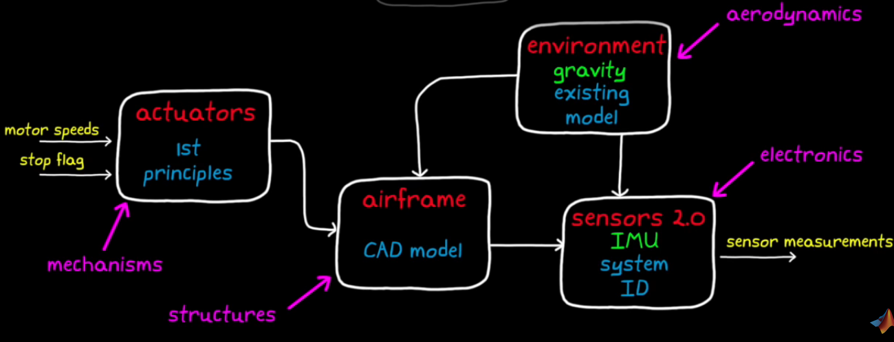

Parrot Minidrone Example
Drone Hardware: Parrot Minidrone
sensors:
1. ultrasound - distance above a surface
2. camera - use a optical flow methond to determine drone's horizonal motion and speed
3. pressure sensor - altitude.
4. IMU - acceleratiob, angular rate.
actuators:
4 propellers, X-configuration.
Propellers in same diagonal spins in the same direction.
So that thrust, roll, pitch, and yaw can be commanded independently.
(Command one motion without affecting the others)
Overview of Control Problem
Manipulate motor speed precisely to maneuver drone in 3D space.
This is an underactuated system: 4 motors for 6 degree of freedom
3 translational directions: up/down, left/right, forward/backward
3 rotational directions: roll, pitch, yaw
Control system architecture
Motor Mixing Algorithm:
Motor_fr = Thrust_cmd + Yaw_cmd + Pitch_cmd + Roll_cmd
Motor_fl = Thrust_cmd - Yaw_cmd + Pitch_cmd - Roll_cmd
Motor_br = Thrust_cmd - Yaw_cmd - Pitch_cmd + Roll_cmd
Motor_bl = Thrust_cmd + Yaw_cmd - Pitch_cmd - Roll_cmd
Moving forward/backward, left/right are unactuated motions: Need to first rotate to an angle, so that the thrust vector is partially in the gravity direction, and partially in the commanded direction.
For our "hovering drone", we assume the roll and pitch angles are small to thrust only affects altitude.
For "racing drone", extreme roll and pitch angles are necessary, so the thrust is coupled with altitude and horizontal speed.
Now, let's assume our "altitude controller" as a PID controller. Consider wind gust disturbane, the drone will roll and move horizontally. We need to keep the roll and pitch angles zero, for hovering. So we shall add three other PID controller.

Still not prefect! The drone may drift away from it's original position, during the recovering of the roll/pitch angles due to wind gust. The drone may walk away slowly! There's nothing in our control architecture to bring our drone back to the starting position.
Re-think! roll/pitch angles may be non-zero in order to hover at the starting position in the strong wind gust! Maintain zero is not good enough! So, rather than "level fly", we need "ground position controller".
Add a position controller: input: position error; output: roll and pitch angles. These angles are the referecne roll and pitch angles! (rather than 0 in the previous control architecture) Position controller is the outer loop. (cascaded loops) The yaw angle also feeds into the position controller, to find the "Heading" of the drone.

Problems to solve:
1. Get required States: yaw, roll, pitch, altitude, XY position
2. Tune 6 PID controller that all interact with each other
Code control logic
how to build a model for simulation
Model-based design work flow:

We use high fidelity non-linear model for simulation. We use low fidelity linear model for tuning the controller. Model block can be divided into sub-models:
actuators, airframe, environment, and sensors.
